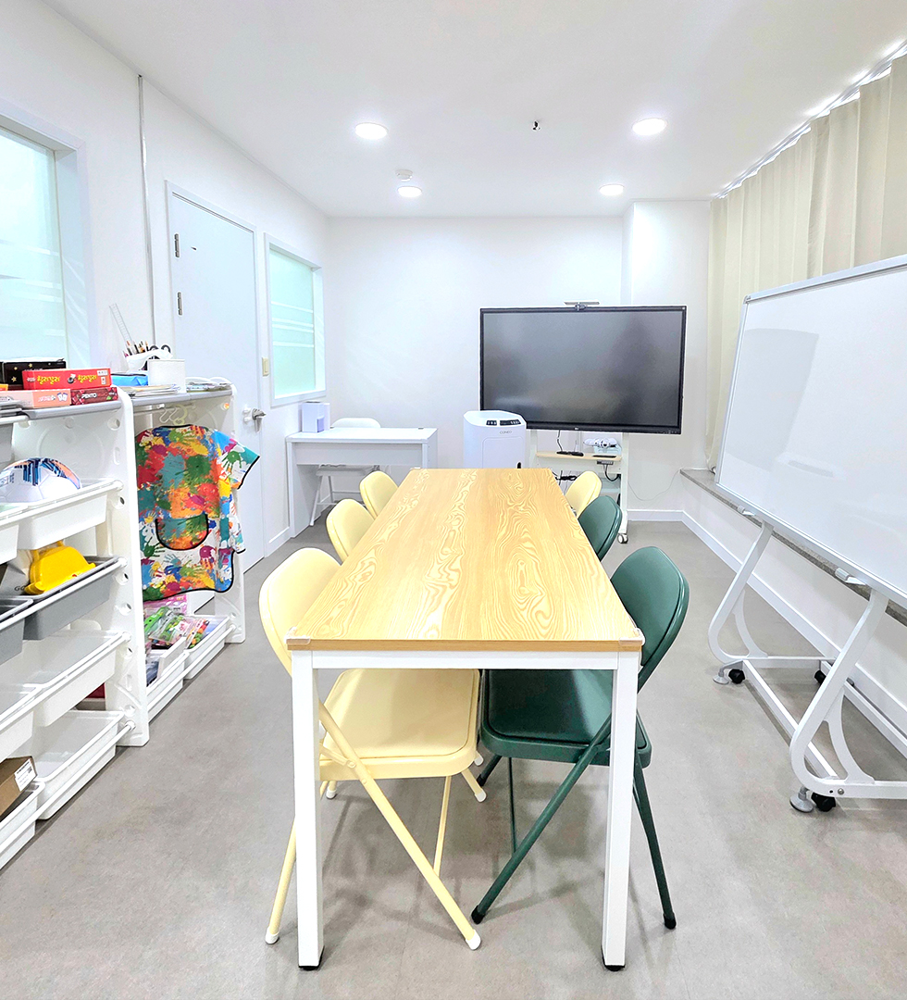
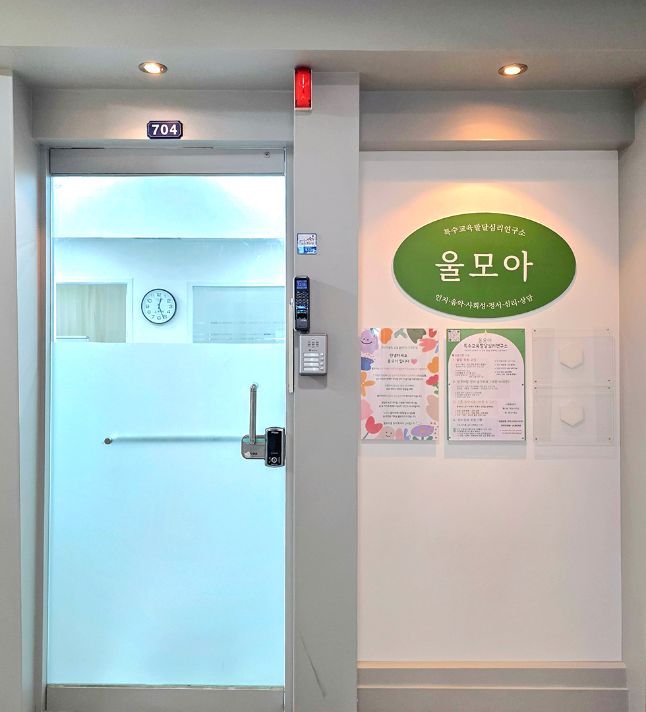
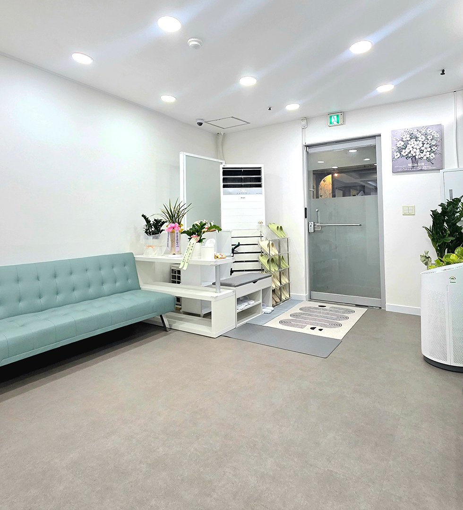

ULMOA · BUCHEON SANG-DONG
울모아
작은 울림이 모이는 곳
서로 다른 속도와 방식으로 배우고,
표현하고, 세상과 연결됩니다.

01
치료 이름부터 고르지 않아도 괜찮아요.
사람을 바꾸기보다,
각자에게 맞는 방법을
함께 찾습니다.
현재 가장 어려운 부분에서 시작해 필요한 전문영역을 연결합니다. 한 가지 이름으로 사람을 설명하기보다 실제 생활과 관계, 학습, 표현을 함께 봅니다.
02 · START HERE
어떤 도움이
필요하세요?
03 · PRACTICE
각 분야의 전문성,
필요할 때는 함께.
- 01
음악치료
정서·표현·상호작용을 음악 경험으로 확장합니다.
- 02
인지치료
주의, 기억, 사고와 일상에서 필요한 문제해결을 다룹니다.
- 03
언어치료
언어이해, 표현, 조음과 사회적 의사소통을 지원합니다.
- 04
놀이치료
놀이를 통해 감정·행동·관계를 안전하게 표현하도록 돕습니다.
- 05
심리상담
아동·청소년·성인의 정서와 관계, 회복 과정을 함께 살핍니다.
- 06
악기 이음
짧고 반복적인 30분 악기 활동을 개인의 속도에 맞춥니다. 프로그램 안내 ↗
04 · PEOPLE
필요한 도움을
함께 찾아갑니다.
이용자의 목표와 의사소통 방식, 참여 환경을 확인해 적합한 진행 방법을 안내합니다.
※ 분야별 담당 전문가, 제공 범위와 가능한 일정은 실제 배정·자격을 확인하여 상담 시 안내합니다.
05 · FIRST VISIT
처음 문의해도
막막하지 않도록.
진단명이나 치료명을 미리 정하지 않아도 됩니다.
- 01문의카카오 또는 전화
- 02초기상담현재 고민과 상황 확인
- 03영역 확인필요한 전문영역 안내
- 04일정 안내가능한 시간 조율
- 05수업 시작개별 목표에 맞춰 진행
06 · SPACE
처음 오는 날도,
낯설지 않게.


07 · SUPPORT
지원제도는
사업별로 확인합니다.
우리아이심리지원·아동비전형성·정신건강토탈케어·우리가족통합심리지원 등은 사업별 대상과 현재 이용 가능 여부를 확인해 안내합니다.
2027년 제공기관 신규 지정 신청을 준비 중입니다. 현재 울모아에서는 해당 바우처 서비스를 이용할 수 없습니다.
08 · CONTACT